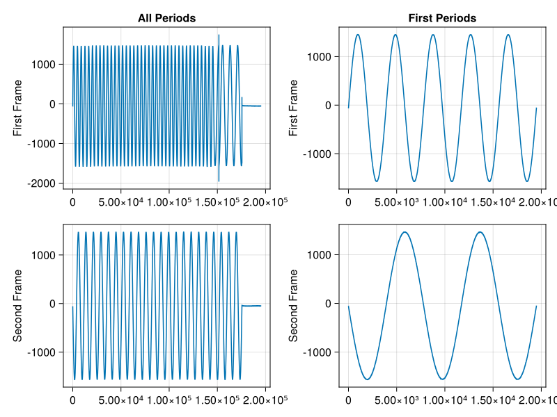

Resync Example
In this example we add a resync signal to a sequence to create a signal that resynchronizes phase and frequency of the DACs after every frame. This can be used to change the frequency and phase of a signal during measurement. While the resynchronization is synchronous due to the sequences, the actual new frequency and phase information is asynchronous as they are transmitted via SCPI.
The example constructs a sequence with no offset and the very last step has the resync flag enabled. Note that during the resync-step the DAC outputs zero.
Julia Client
This and all other examples are located in the examples directory
using RedPitayaDAQServer
using CairoMakie
# obtain the URL of the RedPitaya
include("config.jl")
rp = RedPitaya(URLs[1])
serverMode!(rp, CONFIGURATION)
dec = 32
modulus = 124800
base_frequency = 125000000
periods_per_step = 5
samples_per_period = div(modulus, dec)
periods_per_frame = 50
frame_period = dec*samples_per_period*periods_per_frame / base_frequency
steps_per_frame = div(50, periods_per_step)
decimation!(rp, dec)
samplesPerPeriod!(rp, samples_per_period)
periodsPerFrame!(rp, periods_per_frame)
for i in 1:2
frequencyDAC!(rp, i, 1, base_frequency / modulus)
signalTypeDAC!(rp, i, 1, "SINE")
amplitudeDAC!(rp, i, 1, 0.2)
phaseDAC!(rp, i, 1, 0)
end
triggerMode!(rp, INTERNAL)
# Sequence Configuration
clearSequence!(rp)
stepsPerFrame!(rp, steps_per_frame)
seqChan!(rp, 2)
lut = reshape(fill(0.0f0, steps_per_frame), 1, :)
lut = repeat(lut, outer = 2)
enable = collect(fill(true, steps_per_frame))
enable = reshape(enable, 1, :)
enable = repeat(enable, outer = 2)
# In the last step of each frame we resync the DACs
resync = vcat(fill(false, steps_per_frame - 1), [true])
resync = reshape(resync, 1, :)
resync = repeat(resync, outer = 2)
seq = SimpleSequence(lut, 2, enable, resync)
sequence!(rp, seq)
samples_per_frame = samples_per_period * periods_per_frame
target = samples_per_frame * 0.3 # After a third of a frame we want to switch frequency
serverMode!(rp, ACQUISITION)
masterTrigger!(rp, true)
# Wait until we reach the target sample
curr = currentWP(rp)
while curr < target
# NOP
global curr = currentWP(rp)
sleep(0.01)
end
# Update the phase and frequency of the second channel
frequencyDAC!(rp, 2, 1, base_frequency / (2*modulus))
phaseDAC!(rp, 2, 1, pi)
data = readFrames(rp, 0, 2)
masterTrigger!(rp, false)
serverMode!(rp, CONFIGURATION)
fig = Figure()
lines(fig[1, 1], vec(data[:, 2, :, 1]), axis = (ylabel = "First Frame", title = "All Periods"))
lines(fig[1, 2], vec(data[:, 2, 1:5, 1]), axis = (ylabel = "First Frame", title = "First Periods"))
lines(fig[2, 1], vec(data[:, 2, :, 2]), axis = (ylabel = "Second Frame",))
lines(fig[2, 2], vec(data[:, 2, 1:5, 2]), axis = (ylabel = "Second Frame",))
save(joinpath(@__DIR__(), "images", "resync.png"), fig)
fig